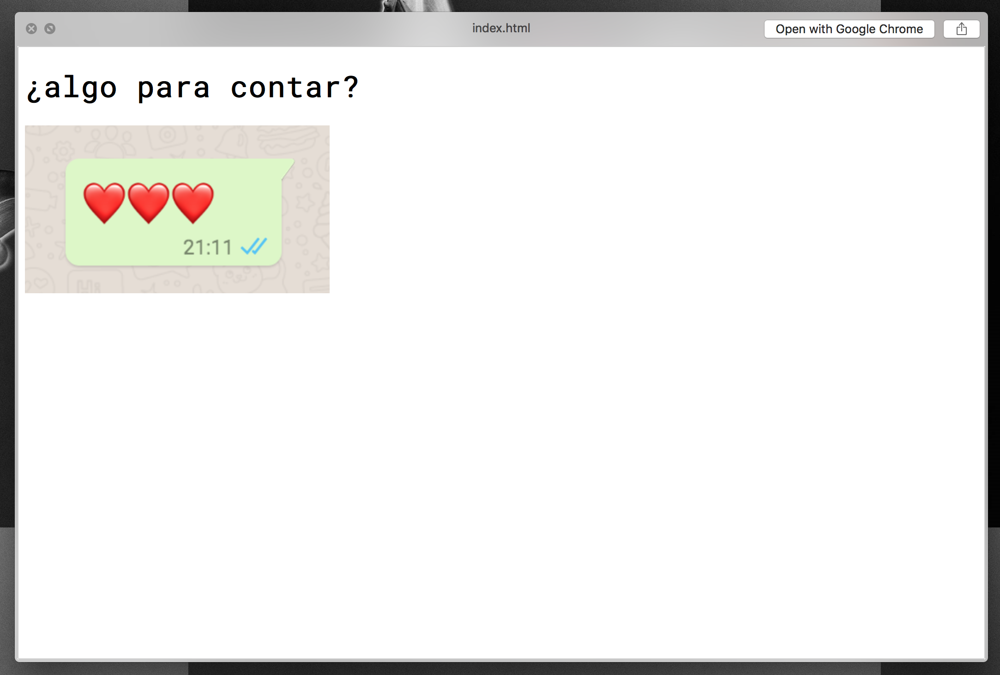
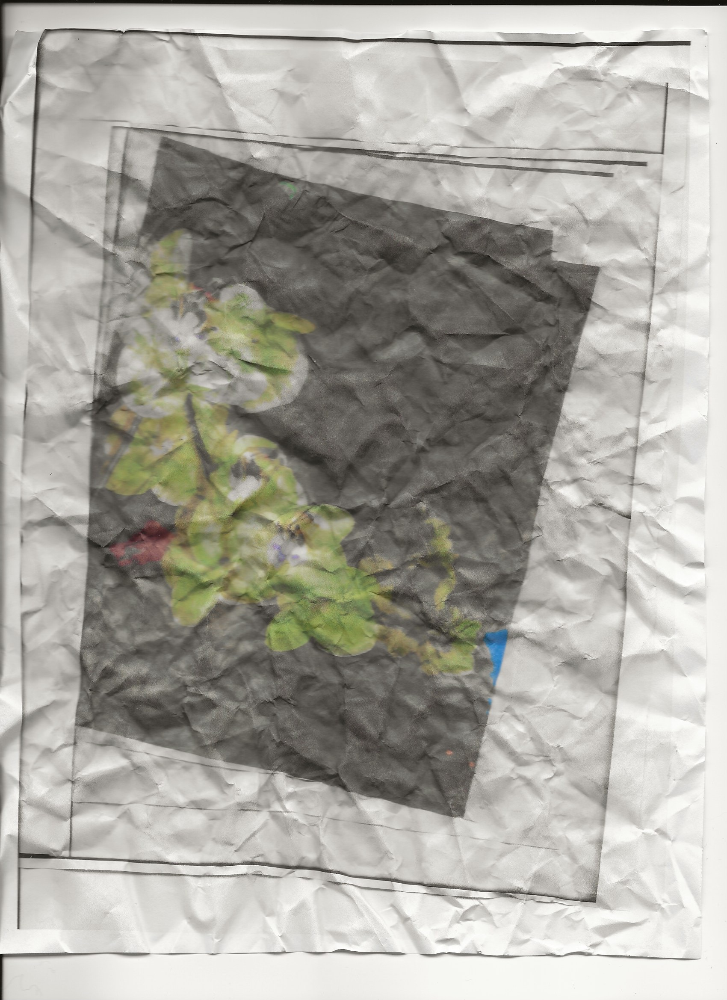

Constraints inspire creative thinking.
For this project I set two: be inspired by the first text message I received that day and have a specific amount of time to come up with the idea and execute it.
I received this message after explaining to a friend a problem I had and the solution. I decided to do a web page where everytime you click on the words written by her, the heart emoticon she wrote would be repeated inside a heart shape. The time wasn't enough to finish the page, but I really liked the idea and it's simplicity.
This is a pretty standar message I receive. It's from my mom asking if I have anything new to tell. We excahnge alot of messages in general, so I decided to look up some of my answers throught the month. Everytime you click on the image one of the answers comes up. I thought it was pretty interesting the little stories told through short texts.
This message is from a friend, let me know we were meeting with a certain person. I decided to photcopy a picture of orchids, crumble them and scan them again until time ran out.
Another message from my mom. This time her question was centered towards how I was feeling. I decided to answer her all in the duration of one hour. Non-stop writing. It ended up being pretty therapeutic and something really personal that I don't think I would ever share completely.